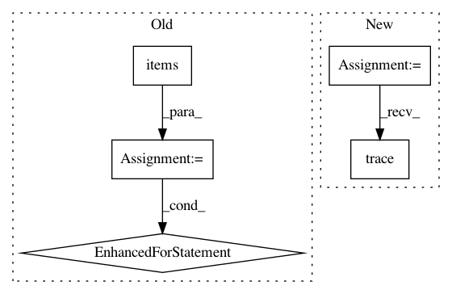

b1cfbe458c0bf123591348c54973d49297fd55ab,tools/mask/mask.py,Mask,_update_faces,#Mask#Any#,320
Before Change
The output from the :class:`plugins.extract.pipeline.Extractor` object
for face in extractor_output.detected_faces:
for frame, idx in self._alignments.hashes_to_frame[face.hash].items():
self._alignments.update_face(frame, idx, face.to_alignment())
if self._saver is not None:
face.image = extractor_output.image
self._save(frame, idx, face)
def _update_frames(self, extractor_output):
Update alignments for the mask if the input type is a frames folder or video
If an output location has been indicated, then puts the mask preview to the save queue
After Change
for face in extractor_output.detected_faces:
frame_name = extractor_output.mask_tool_face_info["source_filename"]
face_index = extractor_output.mask_tool_face_info["face_index"]
logger.trace("Saving face: (frame: %s, face index: %s)", frame_name, face_index)
self._alignments.update_face(frame_name, face_index, face.to_alignment())
metadata = dict(alignments=face.to_png_meta(),
source=extractor_output.mask_tool_face_info)
In pattern: SUPERPATTERN
Frequency: 3
Non-data size: 5
Instances
Project Name: deepfakes/faceswap
Commit Name: b1cfbe458c0bf123591348c54973d49297fd55ab
Time: 2021-02-14
Author: 36920800+torzdf@users.noreply.github.com
File Name: tools/mask/mask.py
Class Name: Mask
Method Name: _update_faces
Project Name: pytorch/pytorch
Commit Name: d73e36a44ab3fa760d385c881db0fa393a557a65
Time: 2021-03-12
Author: vasiliy@fb.com
File Name: torch/quantization/ns/numeric_suite_core_apis_fx.py
Class Name:
Method Name: compare_weights
Project Name: pytorch/pytorch
Commit Name: d73e36a44ab3fa760d385c881db0fa393a557a65
Time: 2021-03-12
Author: vasiliy@fb.com
File Name: torch/quantization/ns/numeric_suite_core_apis_fx.py
Class Name:
Method Name: prepare_model_outputs